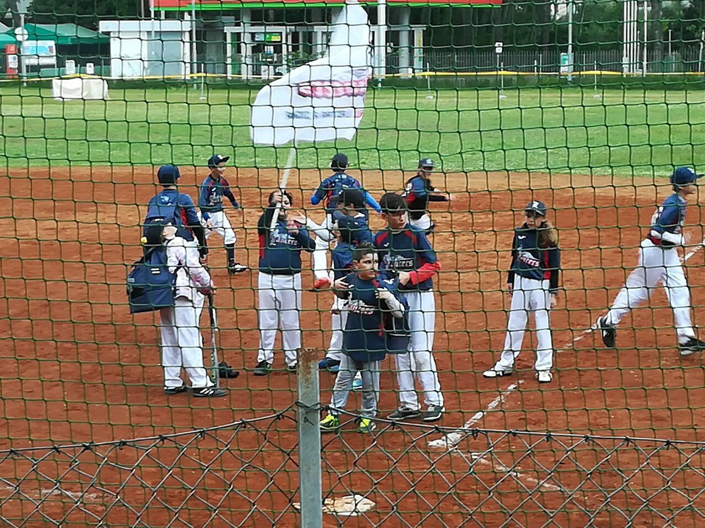

Under 12: Gabbiani Massa – Lancers 6-21
Dalla trasferta in Versilia i lanceri under 12 tornano a casa con una vittoria netta e con uno spirito di squadra rinfrancato da un dopo gara conviviale. Si tratta di una di quelle serate che sono utili quanto un allenamento ben fatto perché servono a far diventare amici nella vita, oltre che semplici compagni di squadra. In gara i ragazzi sono stati sempre concentrati e cinici a sfruttare le incertezze avversarie dal monte di lancio e in ricezione. I veterani Lopez, Paoli e Scarpulla hanno letteralmente preso per mano la squadra per condurla a una vittoria che il giorno dopo sembra facile, ma che prima della gara non lo sembrava affatto. Oltre a loro sugli scudi anche Sarubbi, autore di 4 punti e protagonista con l’esordio come ricevitore in gare ufficiali. Nel complesso una percentuale in battuta superiore alla media della squadra, dato incoraggiante.
Questa i protagonisti della gara: Matteo Angelini, Lorenzo Gianrossi, Alberto Lopez, Paolo Manetti, Silvia Onori, Gabriele Paoli, Alessio Pellegrini, Lorenzo Sarubbi, Lorenzo Scarpulla, Alfredo Signorini, Noemi Vecchi.
Primo inning 1-3. Lopez prima e Paoli poi riescono ad andare in prima base per 4 balls. Sfruttando errate ricezioni, di base in base, Lopez torna a casa base mentre Paoli arriva in terza. Si presenta in battuta Scarpulla che spedisce la pallina vicino al bordo del campo, riuscendo così a fare tutto il giro del diamante e quindi il punto, preceduto ovviamente da Paoli che già era in terza base. Con un po’ di apprensione perché dolorante a un braccio, tanto che ad Arezzo era stato per questo sostituito, sul monte di lancio va Lopez, ricevitore Pellegrini. Lopez inizia la sua serie con gli strike-out dei numeri 8 e 25. Il n° 26 invece fa una bella battuta simile a quella di Scarpulla e anche lui fa tutto il giro del diamante. Il n° 1 è eliminato per 3 strikes.
Secondo inning 0-3. Vecchi, Sarubbi e Lopez sono promossi in prima base per 4 balls. Vecchi passa di base in base fino a fare punto approfittando di alcuni lanci errati non recuperati dal ricevitore. Un passaggio del ricevitore non preso dal giocatore in seconda base consente il punto a Sarubbi e Lopez. Lanciatore Lopez, ricevitore Pellegrini. Lopez elimina per strike-out i numeri 21 e 13. Il n° 28 invece batte, raccoglie Paoli che lancia a Scarpulla in prima base: ottimo gioco di squadra, terzo eliminato e fine inning con i nostri avversari tenuti a zero.
Terzo inning 0-4. Sarubbi è promosso in prima base per 4 balls, poi ruba e va in seconda. Gianrossi batte, poi anche lui ruba e va in seconda, mentre Sarubbi torna a casa base. Lopez batte e Gianrossi dalla seconda fa due basi e quindi è punto. Paoli batte e fa tre basi mentre a Lopez, che si era portato in seconda, ne sono sufficienti due per un altro punto. Pellegrini e per Paoli è facile mettere a segno il quarto punto. Lanciatore Lopez, ricevitore Pellegrini. Il n° 12 riesce a battere ma Scarpulla prende la pallina al volo. I numeri 7 e 25 sono eliminati per strike-out.
Quarto inning 1-3. Scarpulla concede il bis e batte quasi un fuori campo che gli consente di fare il secondo personale giro del diamante. Onori e Sarubbi sono promossi in prima base per 4 balls, poi delle errate ricezioni tornano entrambi a casa base. Angelini batte ma è sfortunato perché la pallina va nei pressi della prima base ed è un gioco da ragazzi eliminarlo. Lanciatore Paoli, ricevitore Scarpulla. Il n° 26 è eliminato per 3 strikes. Il n° 1 è promosso in prima base per 4 balls, poi ruba e va in seconda, tentano di eliminarlo ma un errato disimpegno fra la terza e la seconda base gli consente addirittura di andare a punto. Il n° 21 è eliminato per strike-out mentre il 13 batte ma debolmente, raccoglie Paoli che è lesto a lanciare in prima base dove Manetti non si fa tradire dall’emozione e lo elimina.
Quinto inning 0-4. Lopez è promosso in prima base per 4 balls, poi ruba e va in seconda. Paoli batte, tentano di eliminarlo ma il prima base non prende la pallina lanciatagli da un compagno e Paoli conquista la terza base. Paoli ruba e fa punto. Pellegrini e Scarpulla sono promossi in prima base per 4 balls, Manetti invece la raggiunge perché viene colpito dalla pallina, tra l’altro per la terza volta oggi. Signorini batte e Pellegrini fa punto. Un lancio decisamente errato, addirittura dietro la schiena di Sarubbi in battuta, non raccolto dal ricevitore consente il punto a Scarpulla. Lanciatore Paoli, ricevitore Scarpulla. Il n° 28 batte altissimo e Sarubbi, in posizione di esterno, raccoglie al volo. I numeri 46 e 7 sono eliminati per strike-out.
Sesto inning 4-4. Sarubbi, Lopez e Paoli sono promossi in prima base per 4 balls e basi piene. Quando la stessa cosa capita a Pellegrini Sarubbi è spinto a fare punto forzato. Un errato disimpegno in difesa frutta i punti di Lopez e Paoli. Quando Manetti batte Pellegrini fa punto. Lanciatore Pellegrini, ricevitore Sarubbi. Il n° 15 è promosso in prima base per 4 balls mentre il n° 22 è eliminato per strike-out. Il n° 26 batte, ruba e va in seconda base mentre il 15, che nel frattempo è riuscito ad avanzare, fa punto. Similmente il n° 1 batte e il n° 26 fa punto. Per via di un errato disimpegno il n° 1 arriva addirittura in terza. Un lancio basso di Pellegrini non preso da Sarubbi concede il punto al n° 1 Massese. Il n° 21 va in prima base per base-ball e poi, con delle rubate, giunge in terza. Il n° 13 è eliminato per strike-out mentre la battuta del n° 28 permette al n° 21 di fare il quarto punto e di chiudere l’ultimo pirotecnico inning. Alla fine Lopez è autore di ben 5 punti mentre Paoli, Sarubbi e Scarpulla 4 ciascuno.
Prossimo appuntamento il 13 maggio con il Padule Blu, sul nostro campo di Porto di Mezzo.